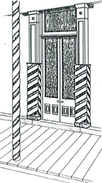
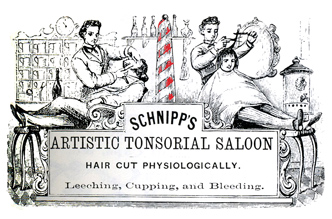
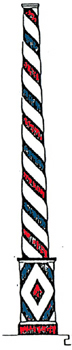
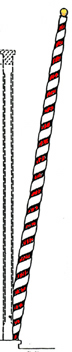
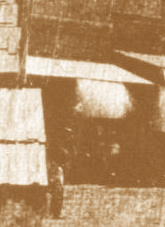
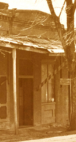
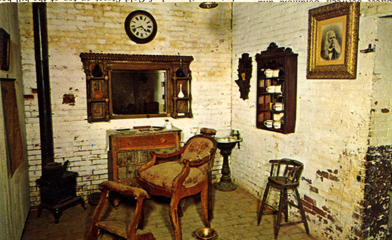

Barber poles and shop signage - 1850s.
1854 Wm. Odenheimer and Thaddeus W. Northey buy the property. Odenheimer moves his Eagle Cottage boarding house to the property and into a larger building. It takes care of 100 boarders and has a barber shop in the northeast corner. After burning, it is rebuilt by July 23.
1856 Barton & Smith are listed as Barbers from New Orleans. (Miners & Business Men's Directory)
1856 Henry Saute listed as Barber from Germany. (Miners & Business Men's Directory)
1856? François Garrissere, was a laundryman and had a barber shop on the west side of Main Street. Listed in the 1860 census as Francwa(sic) Gaiese. (see below)

BLACK BARBERS IN COLUMBIA

Advertising cuts - 1850s.

The association of the black men and the razor goes back to 1820 when they controlled the profession of shaving and hair cutting. As late as 1884, Chamber's Encyclopedia of New York stated, "In the United States the business of barbering is most exclusively in the hands of the colored population." San Francisco was home to sixteen black-owned barber shops as early as 1854, and during the 1860s, a former slave named Peter Briggs enjoyed a monopoly as the sole barber in Los Angeles. The owners of the following buildings with barber shops are not conclusively the barber. They rarely state that the owner is the barber. We can safely assume that many of Columbia's early barbers were black.
1859 Black Barbers, James Barker, age 32, from Tennessee (his wife Sophia, 24 years old, from Illinois, was a dress maker) and J. A. Cousins, 32 years old, from Virginia (his wife Justine, 21 years old, from New York) open a Shaving Emporium in the third building above Fulton Street on the west side of Main (the Temple Building).
1859 July - J. A. Cousins advertised as a barber.
1859 J. A. Cousins leaves the shop with James Barker and locates in the frame building south of the Wells Fargo building.
1859 Richard Henderson from Virginia (not married), a black barber, was in a shop on Fulton Street where Barker joined him. He received some notoriety when his brother William rescued a Columbia woman from a shipwreck they both happened to be aboard. She wrote a very grateful and sentimental letter to the paper.

Charles Koch age 31 with personal worth at $100 from Prussia. (P60-L11)
J. A. Cousins a "Mulatto" age 33 with personal worth at $100 from Virginia. (P61-L8)
Ried Henderson a "Mulatto" age 40 from Virginia. (P62-L7)
James Barker a "Mulatto" age 33 with personal worth at $300 from Tennessee. (P62-L14)
Louis Dukehart a "Mulatto" age 29 with personal worth at $100 from Maryland. With wife Phebe A. Potter age 28 a "Mulatto" washerwoman. (P64-L24)
Victor Guio age 35 from France. (P64-L29)
Thomas Smith a "Black" age 40 from New york.
Charles Snyder age 25 with personal worth at $700 from Prussia. (P64-L28)
Francaise Gaiese age 30 with personal worth at $300 from France. (P65-L23)
Thomas H. Bowen a "Mulatto" age 27 from Mississippi. (Can't read or write) (P90-L11)
1860 R. Henderson operating a Barbershop on the South side of Fulton west of the Water Co. office. A colored. Was joined by James Barker until his death in Nov. 1860 from consumption. (Eastman 1:16:21)
1860 19 November - Jas. J. Barker (blackman) from Tennessee dies of apoplexy age 35. (Columbia Burial Ground Register of Deaths by B. Eastman 1959)
1861 March - the Ferguson hotel owned by Westley, Wilder and Wheeler who remodel the building and change the name to "The Post Office Building" and open a bookstore and stationery in addition to the post office. The small store is rented to DuBois and Tally, barbers.

© Columbia State Historic Park.
Soderer Building used as a barber shop from 1850s through the 1890s.
1865 Joseph Armand Lamartine, closes his barber shop after many years. His shop adjoined Magendie's grocery store. He was one of two gunsmiths in town as well; Monsieur Jaquet was the other. (from the Tuolumne Independent - Jan. 6-13, 1877)
1865 Charles Snyder is still a barber in one part of the Meyers building, White has a tailor's shop in the other part.
1867 Snyder takes Kordmeyer as a partner, they add a shoe shop at the back of the barber shop (the Meyers building).
1880 Antonio Frates has a barber shop in the building.
1867 The structure (Juan Questai Building) is joined to the Leavitt-Walker building, it is a saloon and barber shop at various times.
1867 James Wilson moves his shoemaking business into his brick building, his family lives behind the store. He shares the space with a barber and a daguerrotypist.
1868 After renovating the Leon Building and adding bath tubs, Charles Koch opens his barber shop.
1887 February - Tonsorial artist Green moves his Elite Tonsorial Shaving Parlor into the Soderer building.
1902 Koch dies, Frank John Dondero continues the barbershop, he also is elected county supervisor.

© Columbia State Historic Park.
1850s style Barber Pole visible on the building - 1940.
1940 Frank John Dondero is mentioned in Ezra Dane's book, on Columbia, as the owner of the barbershop, and that he was County Supervisor at the writing.
c1955 Wood buildings at the south end of the structure (Fallon House), called the kitchen and barber shop, removed.
c1955 A barber shop display is in the Columbia museum.

© Web master's collection.
Barber display in the Knapp Building - c1955.

From the Thames Salon read the
Barber Pole History
Page created by
Floyd D. P. Øydegaard.
Email contact:
fdpoyde3 (at) Yahoo (dot) com
A WORK IN PROGRESS,
created for the visitors to the Columbia State Historic park.
© Columbia State Historic Park & Floyd D. P. Øydegaard.